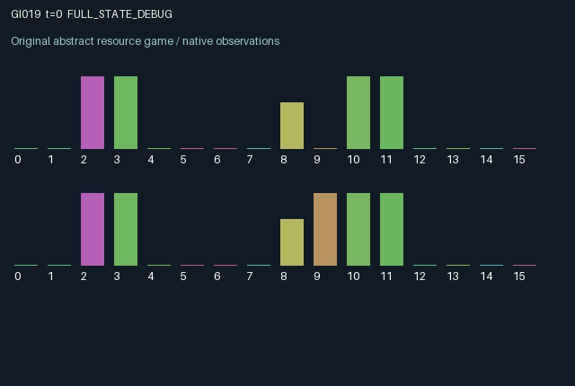

GI019 / LEGACY_ARRAY
astra-d2-00019: consensus switch with irreversible route commitments
2 agents5 actions16 observation columns32 original horizonRuntime: PASS
Release verification episode
Untrained uniform legal actions. Actual JAX state sampled along the full original episode; full-state debug camera. No human performance or learning claim.

Run this game
crucibles play --game 19
Start Python locally, then open the address printed by the terminal. Installation, multiplayer, takeover and keyboard controls →
Objective, rewards & ending
Exact task contract
{
"termination": "Original kernel t >= 32; see mechanism and source"
}Declared per-step reward bounds: -1.0 to 1.0. Observability: source_defined.
Rules
Original mechanism document (historical status wording retained)
# astra-d2-00019: consensus switch with irreversible route commitments This is a parentless proposal using generic consensus, shared routing controls and irrevocable commitments. It is not derived from a supplied parent or a retrieved benchmark. Its relationship to these familiar abstractions is intentional, and it carries no claim of mechanism uniqueness or eligibility. Each role has an entrance lane equal to its role index, a private binary desired destination, an energy reserve and at most one shipment. A shared binary switch determines route = (role index + switch) modulo two at commitment. Once committed, a shipment retains that route even if the shared switch changes during transit. A committed shipment arrives after its countdown subsequently decreases from two to one and then to zero. Targets are redrawn from the explicit step key when a shipment arrives or expires; a redraw may equal the previous target. Actions are 0 wait, 1 load a shipment when idle, 2 commit a previously loaded shipment to the current route, 3 cast a switch-zero ballot, and 4 cast a switch-one ballot. Loading costs 0.12 energy, commitment costs 0.08 and a ballot costs 0.03. Insufficient energy makes the special effect ineffective. Energy refills by 0.03 per transition and is capped at one. All actions remain legal. Ballots persist until replaced or until their age reaches four. When both valid ballots match, they are cleared and their value becomes a pending switch command. That command applies at the beginning of the next transition, before any route commitments on that transition. New ballots can then be cast for a later command. Only agreement produces a command; one agent can prevent or delay a change. This creates a delay between requesting, agreeing, applying and irreversibly using shared infrastructure. Private targets can make demands conflict, while public ballots can also convey desired configurations. A shipment age starts at one on loading. An active shipment expires when its age reaches eight unless it arrives on the same transition, in which case arrival takes precedence. There is no automatic dispatch, no ability to reroute a committed shipment, and no carry-over of the old shipment after completion. The previous latched route remains observable as history while idle. Reward is +0.80 for a correct arrival, -0.40 for an incorrect arrival, -0.45 for expiration, -0.05 for loading, -0.015 for casting a ballot, and -0.01 for a role whose shipment was active at the beginning of the transition. It is explicitly clipped to [-1, 1]. The two roles affect each other's feasible route changes through persistent votes and the shared switch, even though arrivals have individual rewards. No assumption of coordination or learning effectiveness is made. Observation columns 0 through 15 are: time/32; own private target; current switch; pending switch or -1; own stage/2; partner stage/2; own shipment age/8; partner shipment age/8; own energy; own most recently latched route; own ballot or -1; partner ballot or -1; own ballot age/4; partner ballot age/4; own transit countdown/2; and own previous outcome (1 correct, -1 wrong, -0.50 expired, 0 no outcome). Stages are 0 idle, 1 loaded and 2 committed. Partner target, energy, latched route and previous outcome are hidden. The intended interface is two agents, 16 observations each, five actions and 32 transitions. Terminal state and observation are preserved. This source has author-side syntax parsing only. Isolated validation, duplicate review, mechanism qualification and performance assessment remain unassessed.
Commands
0Action 0; see mechanism and source
1Action 1; see mechanism and source
2Action 2; see mechanism and source
3Action 3; see mechanism and source
4Action 4; see mechanism and source
Roles & abilities
agent_0 Original legacy agent; see mechanism and source
agent_1 Original legacy agent; see mechanism and source
Observation permissions
Training receives only the original observation rows. Role cameras use declared visibility; debug cameras are explicitly marked. Local benchmark records log debug exposure and role takeover history.
Exact observation layout
[]
Entity visibility & attributes
[]
Actual verification & provenance
Per-game execution receipt
{
"game": "gi019",
"status": "PASS",
"verification_revision": 2,
"source_sha256": "2c38069c31d6cdf11dd1416f0f1d39af439cd790581609a16ddc9dffc8c12b84",
"seed": 20261101,
"runtime": {
"jax": "0.4.38",
"numpy": "1.26.4",
"devices": [
"TFRT_CPU_0"
]
},
"dimensions": {
"num_agents": 2,
"observation_size": 16,
"num_actions": 5,
"max_steps": 32
},
"checks": {
"eager_reset": {
"status": "PASS",
"seconds": 0.5241560935974121
},
"observation_spaces_legal_masks": {
"status": "PASS",
"seconds": 0.17342638969421387
},
"eager_step": {
"status": "PASS",
"seconds": 1.0061838626861572
},
"jit_reset": {
"status": "PASS",
"seconds": 0.2683732509613037
},
"jit_step": {
"status": "PASS",
"seconds": 0.4468085765838623
},
"eager_jit_integer_parity_float_measurement": {
"status": "PASS",
"seconds": 0.0
},
"jit_vmap_reset": {
"status": "PASS",
"seconds": 0.2272779941558838
},
"jit_vmap_step": {
"status": "PASS",
"seconds": 0.8997013568878174
},
"outer_autoreset_api": {
"status": "PASS",
"seconds": 0.9492387771606445
},
"full_original_horizon_episode_and_render": {
"status": "PASS",
"seconds": 1.2224178314208984
}
},
"human_scores": null,
"browser_controls": "PENDING",
"failures": [],
"elapsed_seconds": 6.23632025718689,
"float_parity_max_abs": 0.0,
"numerical_parity": "EXACT",
"raw_terminal_absorbing": "NOT_PART_OF_ORIGINAL_LEGACY_CONTRACT",
"terminal_outer_reset": "PASS",
"episode_steps": 32,
"scripted_random_returns": [
0.08000002894550562,
-1.7549999207258224
],
"terminal": true,
"demo_information": "FULL_STATE_DEBUG",
"demo_frames": 33,
"render_roles_checked": 2
}Chromium control verification
{
"game": "gi019",
"status": "PASS",
"human_scores": null,
"engineering": true,
"checks": [
"catalog_selected_and_real_native_reset",
"dom_queue_and_native_step",
"second_participant_ownership_and_native_joint_step",
"all_roles_individually_controllable_no_role_cap",
"explicit_debug_camera",
"release_to_pure_ai_without_reset"
],
"ui_sha256": "15b5861d23b3c42811865c954d5a988280bbfd21cf8e93754be2437a027158c5",
"seconds": 3.2083723545074463
}Original identity and file hashes
{
"id": 19,
"key": "gi019",
"title": "astra-d2-00019: consensus switch with irreversible route commitments",
"summary": "",
"tags": [],
"family": "legacy_array",
"dimensions": {
"num_agents": 2,
"observation_size": 16,
"num_actions": 5,
"max_steps": 32
},
"source_sha256": "2c38069c31d6cdf11dd1416f0f1d39af439cd790581609a16ddc9dffc8c12b84",
"manifest_sha256": "98144989a7e2af696210c2bad3017181dec51a5e29028804070589f18d08631b",
"files": [
{
"file": "candidate.py",
"sha256": "2c38069c31d6cdf11dd1416f0f1d39af439cd790581609a16ddc9dffc8c12b84",
"bytes": 5654,
"origin": "work/exp_2/astra_generation/discovery_v2/initial/candidate_00019/attempt_00/candidate.py"
},
{
"file": "mechanism.md",
"sha256": "abf566819d18be727d2d1233c895ea3b67f5339d19bbfe1f0364856b2e63dac1",
"bytes": 3606,
"origin": "work/exp_2/astra_generation/discovery_v2/initial/candidate_00019/attempt_00/mechanism.md"
}
],
"original_status": "LEGACY_SOURCE",
"original_saved_replay": false,
"release_validation": "PASS",
"human_scores": null,
"browser_validation": "PASS"
}